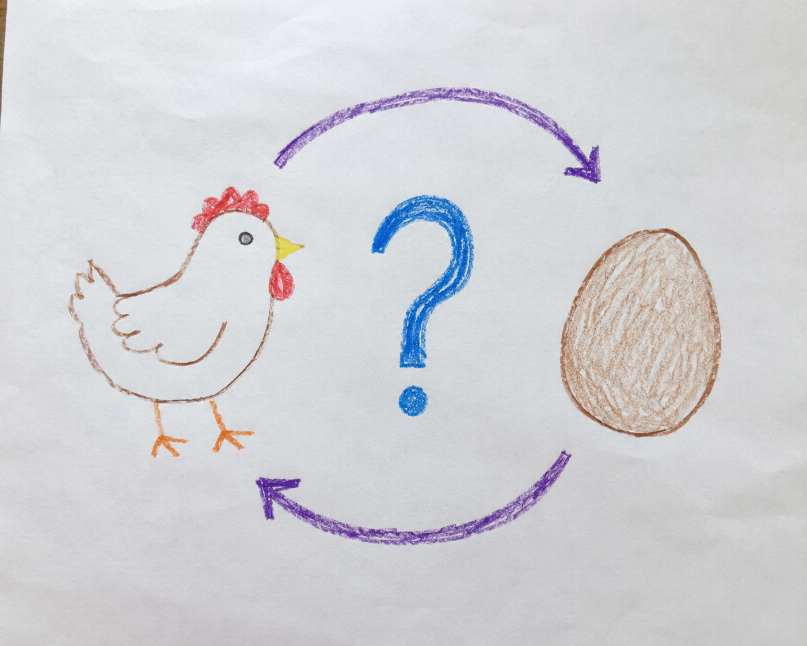

It's not the Matthew effect. It's the Daniel effect.
When I worked at Automattic, the company behind WordPress.com, one of the things my team looked into was what makes a blog post get likes. We had data showing that people who don’t get likes early tend to quit blogging. The likes aren’t vanity. They’re the fuel that keeps someone writing.
Why does early success predict later success?
So we went looking for the best predictor of whether a post would get likes. We checked the obvious candidates: topic, length, time of day, whether it had an image. The strongest predictor, by a wide margin, turned out to be embarrassingly circular. It was whether the author’s previous posts got likes.
That’s it. The best way to get likes on your tenth post is to have gotten them on your ninth. It’s a chicken-and-egg trap, and it’s a little sad. The people who most need the encouragement, the ones starting from zero, are exactly the ones least likely to get it.

Blogging isn’t special here. Authors who made money on their last book are the ones most likely to make money on the next. The same circular pattern shows up almost everywhere you look for it.
Sociologists have a name for this. In 1968 Robert Merton called it the Matthew effect, after a line in the Gospel of Matthew: “to everyone who has, more will be given, but from the one who has not, even what he has will be taken away.” Merton chose that verse precisely because it sounds unjust. He was describing how famous scientists collect the credit for work that less-famous scientists did just as much of. Recognition accrues to whoever already has it. (Robert Merton, “The Matthew Effect in Science,” Science, 1968.)
Will AI finally level the field for newcomers?
For most of history this trap looked permanent. You needed an audience to get an audience, a track record to earn the next one, capital to attract capital.
And then AI arrived and looked, for a moment, like the thing that finally breaks it. Suddenly anyone can produce a clean essay, a working script, a competent analysis. The surface of expertise, the polished output that used to take years to fake, now costs twenty dollars a month. If the Matthew effect ran on access to knowledge, AI should be the great leveler.
Here’s the claim I want to make. The phenomenon Merton named after Matthew was described more accurately about six hundred years earlier, by Daniel, in Aramaic.
When Daniel interprets the king’s dream, he opens with a blessing: יָהֵב חָכְמְתָא לְחַכִּימִין וּמַנְדְּעָא לְיָדְעֵי בִינָה, “He gives wisdom to the wise, and knowledge to those who already understand” (Daniel 2:21).
Read it the way the Matthew effect is usually read and it sounds just as unfair: wisdom handed to the people who already have it. The rabbis noticed. The Talmud (Berakhot 55a) says it flatly. The Holy One grants wisdom only to one who already has wisdom, and it cites this exact verse.
But the commentators flip it. A Roman noblewoman once challenged Rabbi Yose ben Halafta on precisely this point: surely God should give wisdom to fools, since they’re the ones who need it. He answered with a question. If two people came to you for a loan, one rich and one poor, which would you lend to? The rich one, she said, because he can pay it back. You’ve answered your own question, he told her (Midrash Tanchuma, Vayakhel). Give wisdom to a fool and he wastes it in the bathhouse. Give it to someone prepared to hold it and they build something.
Daniel isn’t talking about credit. He’s talking about capacity. Wisdom is lent to whoever has built a vessel that can hold it. Access was never the constraint. The vessel is.
Which is exactly why AI doesn’t level the field the way it appears to. AI hands everyone the surface and nothing underneath it. It floods you with access and leaves untouched the foundation that decides whether any of that access turns into something real. When everyone drinks from the same firehose, the thing that matters is who has somewhere to put the water. The dabbler with infinite knowledge at his fingertips still can’t hold it. If anything, the Daniel effect gets stronger in the AI age. Depth was always the real moat, and now it’s close to the only one left.
How do you escape a cold-start problem with no audience?
You don’t wait for the recognition. You can’t, because waiting is the trap. The only way out of the empty state is to manufacture your way out of it: show up, publish, build your presence deliberately, do the work before anyone is watching. Recognition comes after that, never before it. Every post you write does two things at once. It adds to the presence you don’t yet control, and it adds a layer to the vessel you do.
Loud Camel news
This week on Loud Camel, a tool that helps researchers get cited and recognized, I shipped exactly this idea into the product. The Reddit opportunities view used to go blank when there were no good threads to reply to, which is the worst thing you can show someone fighting a cold start. Now it always proposes at least one post to publish, with angle-level dedup so even saturated accounts keep getting fresh angles instead of an empty screen. The honest version of an empty state isn’t “nothing here”, it is “here is the next thing you can do”.
Frequently Asked Question
What is the cheapest way to start building visibility before anyone is paying attention?
Start with the cheapest threshold-crossing action there is: profile hygiene. Open your Google Scholar profile, count the papers listed, and compare against your CV. Most researchers find one to three papers missing or duplicated, and every duplicate quietly splits your credit between two half-yous, which is the Matthew engine working against you. Loud Camel automates this kind of low-effort, high-leverage upkeep on a recurring schedule, but you can do the first pass yourself in about ten minutes.
Takeaway
If you are staring at an empty dashboard, no audience and no track record, don’t wait to be noticed before you act. Make the first deposits now, while nobody is watching, because that is the only part of the system you actually control.